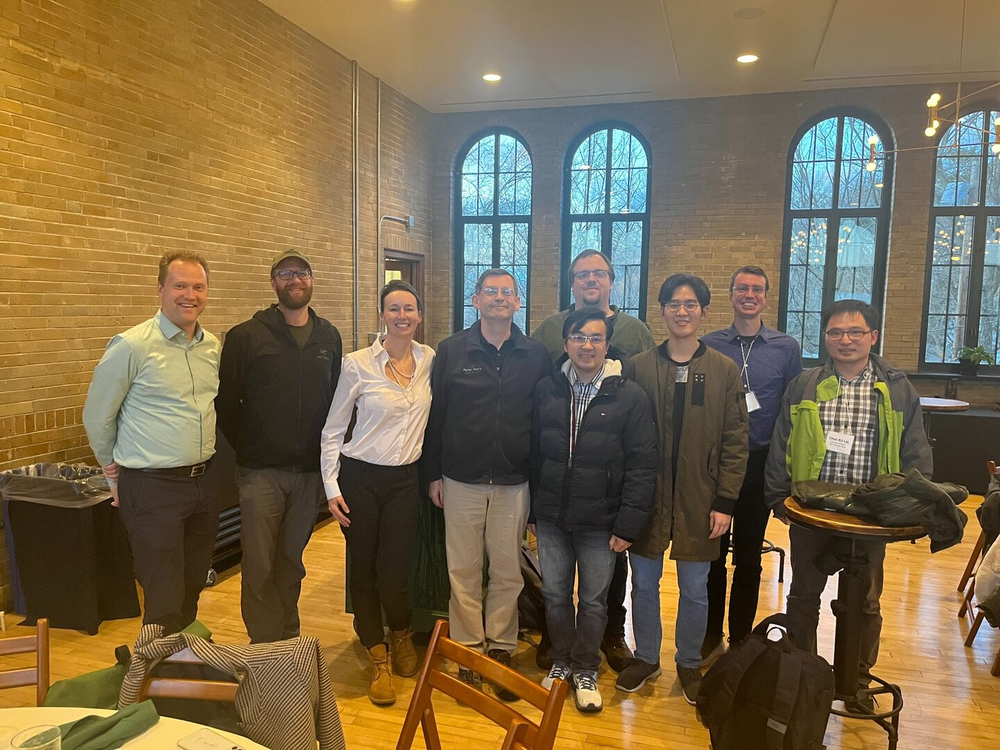
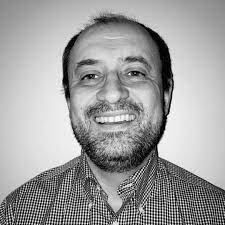
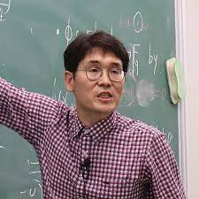
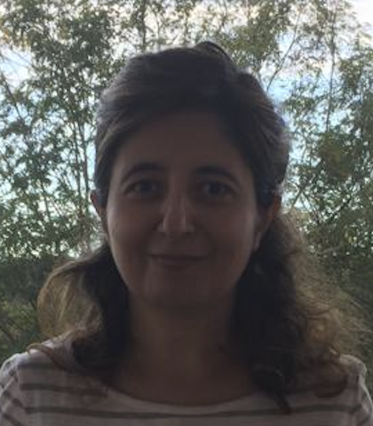
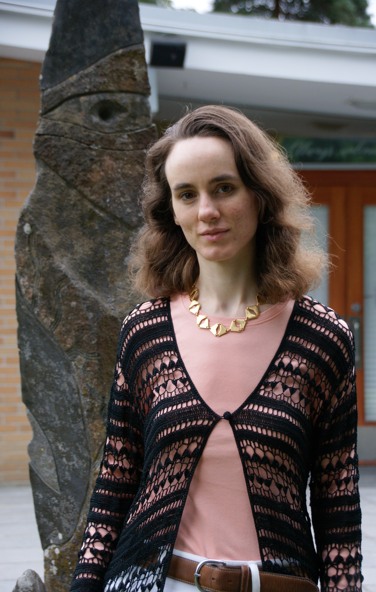
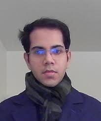
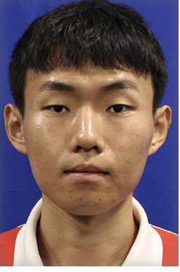

Past and Current Ph.D.
Students


A gathering with several of my Ph.D. students, postdocs, and other friends
This page is dedicated to my past and present
Ph.D. students. I have been extraordinarily fortunate to advise
so many talented and dedicated people. Their accomplishments
reflect their own ability, creativity, and hard work. I am
grateful to have had the opportunity to support them during an
important stage of their careers.
The list includes students advised at the University of Missouri and the University of Rochester, as well as students co-advised with colleagues at other institutions where indicated. As of November 18, 2026, the roster includes 38 Ph.D. students. Thirty have graduated and eight are current students.
The list includes students advised at the University of Missouri and the University of Rochester, as well as students co-advised with colleagues at other institutions where indicated. As of November 18, 2026, the roster includes 38 Ph.D. students. Thirty have graduated and eight are current students.
Ph.D. students by degree year
Each dot represents one student. Filled dots show completed degrees. Open dots show expected degrees.
2006
2007
2008
2009
2010
2011
2012
2013
2014
2015
2016
2017
2018
2019
2020
2021
2022
2023
2024
2025
2026
2027
2028
2029
2030
Each student’s entry lists our joint papers on arXiv and in MathSciNet as of November 18, 2026. Each arXiv identifier and each verified Mathematical Reviews (MR) number counts once. A paper can appear in both lists. Select a positive count to see the titles.
Notation
(*) indicates that the student obtained a postdoctoral position at a Ph.D.-granting institution after graduation.
(**) indicates that the student currently holds a tenure-track or tenured academic position.
(*) indicates that the student obtained a postdoctoral position at a Ph.D.-granting institution after graduation.
(**) indicates that the student currently holds a tenure-track or tenured academic position.
Students
1) Georgiy Arutunyants (Professional profile) (Ph.D.
2006) · 0 joint arXiv papers found · 1 joint MathSciNet paper
Georgiy got his Ph.D. from the University of Missouri in 2006 in geometric measure theory and decided to seek a career in industry. After a highly successful stint at SAS and Prognos Inc, George is now the Head of Analytics at Parker Avery.

2) Derrick Hart (arXiv papers)(Ph.D. 2008) (*) ·
13 joint arXiv papers
- A Furstenberg-Katznelson-Weiss type theorem on (d + 1)-point configurations in sets of positive density in finite field geometries (1009.3991)
- An analog of the Furstenberg-Katznelson-Weiss theorem on triangles in sets of positive density in finite field geometries (0804.4894)
- Averages over hyperplanes, sum-product theory in vector spaces over finite fields and the Erdős-Falconer distance conjecture (0707.3473)
- Distance graphs in vector spaces over finite fields, coloring and pseudo-randomness (0804.3036)
- Generalized incidence theorems, homogeneous forms, and sum-product estimates in finite fields (0801.0728)
- Group actions and geometric combinatorics in 𝔽qd (1311.4788)
- Long paths in the distance graph over large subsets of vector spaces over finite fields (1406.0107)
- Multi-parameter projection theorems with applications to sums-products and finite point configurations in the Euclidean setting (1106.5544)
- Pinned distance sets, k-simplices, Wolff's exponent in finite fields and sum-product estimates (0903.4218)
- Pinned distance sets, Wolff's exponent in finite fields and improved sum-product estimates (0711.4597)
- Sum-product estimates in finite fields (math/0609426)
- Sums and products in finite fields: an integral geometric viewpoint (0705.4256)
- Ubiquity of simplices in subsets of vector spaces over finite fields (math/0703504)
11 joint MathSciNet papers
- A Furstenberg-Katznelson-Weiss type theorem on (d+1)-point configurations in sets of positive density in finite field geometries (MR2799893)
- Averages over hyperplanes, sum-product theory in vector spaces over finite fields and the Erdős-Falconer distance conjecture (MR2775806)
- Distance graphs in vector spaces over finite fields (MR3066884)
- Generalized incidence theorems, homogeneous forms and sum-product estimates in finite fields (MR2552610)
- Group actions and geometric combinatorics in 𝔽qd (MR3592595)
- Long paths in the distance graph over large subsets of vector spaces over finite fields (MR3450941)
- Multiparameter projection theorems with applications to sums-products and finite point configurations in the Euclidean setting (MR3066881)
- Pinned distance sets, k-simplices, Wolff's exponent in finite fields and sum-product estimates (MR2917133)
- Sum-product estimates in finite fields via Kloosterman sums (MR2341599)
- Sums and products in finite fields: an integral geometric viewpoint (MR2440133)
- Ubiquity of simplices in subsets of vector spaces over finite fields (MR2379694)
Derrick got his Ph.D. from the University of Missouri in 2008 in additive combinatorics and worked as a postdoc at Rutgers and Kansas State before becoming a software engineer in the Kansas City area.
3) Doowon Koh (arXiv papers) (Professional profile) (Ph.D. 2008) (*) (**) ·
15 joint arXiv papers
- A new bound on Erdős distinct distances problem in the plane over prime fields (1805.08900)
- A new perspective on the distance problem over prime fields (1905.04179)
- Averages over hyperplanes, sum-product theory in vector spaces over finite fields and the Erdős-Falconer distance conjecture (0707.3473)
- Distance graphs in vector spaces over finite fields, coloring and pseudo-randomness (0804.3036)
- Erdős-Falconer distance problem, exponential sums, and Fourier analytic approach to incidence theorems in vector spaces over finite fields (math/0609366)
- Extension Theorems for Paraboloids in the Finite Field Setting (0805.0814)
- Extension Theorems for Spheres in the Finite Field Setting (0712.1627)
- Extension theorems for the Fourier transform associated with non-degenerate quadratic surfaces in vector spaces over finite fields (0804.4505)
- Finite field restriction estimates for the paraboloid in high even dimensions (1712.05549)
- Generalized incidence theorems, homogeneous forms, and sum-product estimates in finite fields (0801.0728)
- Multi-linear forms, graphs, and Lp-improving measures in 𝔽qd (2301.00463)
- On restriction estimates for the zero radius sphere over finite fields (1806.11387)
- On the quotient set of the distance set (1802.08297)
- Pinned distance sets, k-simplices, Wolff's exponent in finite fields and sum-product estimates (0903.4218)
- The quotient set of the quadratic distance set over finite fields (2301.12021)
15 joint MathSciNet papers
- A new bound for the Erdős distinct distances problem in the plane over prime fields (MR4066548)
- Averages over hyperplanes, sum-product theory in vector spaces over finite fields and the Erdős-Falconer distance conjecture (MR2775806)
- Distance graphs in vector spaces over finite fields (MR3066884)
- Extension theorems for paraboloids in the finite field setting (MR2678639)
- Extension theorems for spheres in the finite field setting (MR2652707)
- Extension theorems for the Fourier transform associated with nondegenerate quadratic surfaces in vector spaces over finite fields (MR2524655)
- Finite field restriction estimates for the paraboloid in high even dimensions (MR4075576)
- Generalized incidence theorems, homogeneous forms and sum-product estimates in finite fields (MR2552610)
- Multi-linear forms, graphs, and Lp-improving measures in 𝔽qd (MR4861735)
- New bounds for distance-type problems over prime fields (MR4056110)
- On restriction estimates for the zero radius sphere over finite fields (MR4282016)
- On the quotient set of the distance set (MR3959878)
- Pinned distance sets, k-simplices, Wolff's exponent in finite fields and sum-product estimates (MR2917133)
- The Erdős-Falconer distance problem, exponential sums, and Fourier analytic approach to incidence theorems in vector spaces over finite fields (MR2452874)
- The quotient set of the quadratic distance set over finite fields (MR4790802)
Doowon Koh got his Ph.D. from the University of Missouri in 2008 in harmonic analysis and analytic number theory. He is now a Full Professor of Mathematics at Chungbuk National University in Korea. Doowon has graduated two Ph.D. students of his own.

4) Jeremy Chapman (arXiv papers) (Professional profile) (Ph.D. 2010) (**) ·
2 joint arXiv papers
4 joint MathSciNet papers
- Integer distances in vector spaces over finite fields (MR5010095)
- Long paths in the distance graph over large subsets of vector spaces over finite fields (MR3450941)
- On rapid generation of SL2(𝔽Q) (MR2506136)
- Pinned distance sets, k-simplices, Wolff's exponent in finite fields and sum-product estimates (MR2917133)
Jeremy got his Ph.D. from the University of Missouri in 2010 in geometric combinatorics. He is now a Professor of Mathematics at Lyon College in Arkansas.
5) Le Anh Vinh (arXiv papers) (Professional profile) (Ph.D. 2010) (co-advised with Noam Elkies) (*) (**) ·
1 joint arXiv paper
1 joint MathSciNet paper
Vinh got his Ph.D. from Harvard in 2010 in combinatorics. He is now a Professor of Mathematics at VNIES in Hanoi, Vietnam.
6) David Covert (arXiv papers) (Professional profile) (Ph.D. 2011) (**) ·
6 joint arXiv papers
- A Furstenberg-Katznelson-Weiss type theorem on (d + 1)-point configurations in sets of positive density in finite field geometries (1009.3991)
- A variant of Waring's Problem for the ring of integers modulo n (1609.02090)
- An analog of the Furstenberg-Katznelson-Weiss theorem on triangles in sets of positive density in finite field geometries (0804.4894)
- Generalized incidence theorems, homogeneous forms, and sum-product estimates in finite fields (0801.0728)
- Geometric configurations in the ring of integers modulo pℓ (1105.5373)
- Long paths in the distance graph over large subsets of vector spaces over finite fields (1406.0107)
4 joint MathSciNet papers
- A Furstenberg-Katznelson-Weiss type theorem on (d+1)-point configurations in sets of positive density in finite field geometries (MR2799893)
- Generalized incidence theorems, homogeneous forms and sum-product estimates in finite fields (MR2552610)
- Geometric configurations in the ring of integers modulo pℓ (MR3119606)
- Long paths in the distance graph over large subsets of vector spaces over finite fields (MR3450941)
David got his Ph.D. from the University of Missouri in 2011 in number theory and combinatorics. He is now an Associate Teaching Professor and Director of Undergraduate Mathematics at the University of Missouri–St. Louis. David has co-advised a Ph.D. student with my colleague Jonathan Pakianathan.
7) Steven Senger (arXiv papers) (Professional profile) (Ph.D. 2011) (*) (**) ·
9 joint arXiv papers
- A Furstenberg-Katznelson-Weiss type theorem on (d + 1)-point configurations in sets of positive density in finite field geometries (1009.3991)
- An improved point-line incidence bound over arbitrary finite fields via the VC-dimension theory (2303.00330)
- Distance graphs in vector spaces over finite fields, coloring and pseudo-randomness (0804.3036)
- Entropy Expansion for General Polynomial Images of Frostman Random Variables (2507.15196)
- Falconer-type estimates for dot products (2006.09344)
- On sets of directions determined by subsets of ℝd (1009.4169)
- Orthogonal systems in vector spaces over finite fields (0807.0592)
- Packing sets in Euclidean space by affine transformations (2405.03087)
- Sharpness of Falconer's estimate in continuous and arithmetic settings, geometric incidence theorems and distribution of lattice points in convex domains (1006.1397)
9 joint MathSciNet papers
- A Furstenberg-Katznelson-Weiss type theorem on (d+1)-point configurations in sets of positive density in finite field geometries (MR2799893)
- Distance graphs in vector spaces over finite fields (MR3066884)
- Falconer-type estimates for dot products (MR4196055)
- Improved incidence bounds over arbitrary finite fields via the VC-dimension theory (MR4694315)
- On sets of directions determined by subsets of ℝd (MR2892624)
- Orthogonal systems in vector spaces over finite fields (MR2465775)
- Sharpness of Falconer's (d+1)/2 estimate (MR3525395)
- Sharpness of Falconer's estimate and the single distance problem in ℤdq (MR3297072)
- The Erdős distance problem (MR2721878)
Steven got his Ph.D. from the University of Missouri in 2011 in harmonic analysis and combinatorics. He is now a Full Professor of Mathematics at Missouri State University.
8) Krystal Taylor (arXiv papers) (Professional profile) (Ph.D. 2012) (*) (**) ·
14 joint arXiv papers
- Configuration sets with nonempty interior (1907.12513)
- Finite Chains inside Thin Subsets of ℝd (1409.2581)
- Finite trees inside thin subsets of ℝd (1903.02662)
- Fourier integral operators, fractal sets and the regular value theorem (1011.5939)
- Intersections of sets, diophantine equations and Fourier analysis (1304.6774)
- Lattice points close to families of surfaces, non-isotropic dilations and regularity of generalized Radon transforms (1103.1670)
- Measures of polynomial growth and classical convolution inequalities (1410.1436)
- Minkowski sums with convex curves without pointwise Fourier decay (2608.28770)
- Nonempty interior of configuration sets via microlocal partition optimization (2209.02084)
- On k-point configuration sets with nonempty interior (2005.10796)
- On the Mattila-Sjolin theorem for distance sets (1110.6805)
- Pinned geometric configurations in Euclidean space and Riemannian manifolds (1610.00349)
- Positive Measure of Unions of Variable Surfaces (2605.27550)
- Realizing trees of configurations in thin sets (2401.11597)
11 joint MathSciNet papers
- Configuration sets with nonempty interior (MR4289240)
- Finite chains inside thin subsets of ℝd (MR3518531)
- Finite trees inside thin subsets of ℝd (MR4008977)
- Fourier integral operators, fractal sets, and the regular value theorem (MR2836125)
- Intersections of sets and Fourier analysis (MR3481172)
- Lattice points close to families of surfaces, nonisotropic dilations and regularity of generalized Radon transforms (MR2862154)
- Maximal operators: scales, curvature and the fractal dimension (MR3916130)
- Nonempty interior of configuration sets via microlocal partition optimization (MR4716767)
- On k-point configuration sets with nonempty interior (MR4405974)
- On the Mattila-Sjolin theorem for distance sets (MR2987085)
- Realizing trees of configurations in thin sets (MR4904870)
Krystal got her Ph.D. at the University of Rochester in 2012 in harmonic analysis. She is now an Associate Professor of Mathematics at Ohio State University. Krystal has recently graduated a Ph.D. student of her own.
9) Esen Aksoy (arXiv papers) (Professional profile) (Ph.D. 2014) co-advised with Jon Pakianathan ·
1 joint arXiv paper
Esen got her Ph.D. from the University of Rochester in 2014 in number theory. She is now a Lecturer at Purdue University.

10) Mike Bennett (arXiv papers) (Professional profile) (Ph.D. 2015) ·
4 joint arXiv papers
- Finite Chains inside Thin Subsets of ℝd (1409.2581)
- Group actions and geometric combinatorics in 𝔽qd (1311.4788)
- Long paths in the distance graph over large subsets of vector spaces over finite fields (1406.0107)
- Three-point configurations determined by subsets of 𝔽q2 via the Elekes-Sharir paradigm (1201.5039)
4 joint MathSciNet papers
- Finite chains inside thin subsets of ℝd (MR3518531)
- Group actions and geometric combinatorics in 𝔽qd (MR3592595)
- Long paths in the distance graph over large subsets of vector spaces over finite fields (MR3450941)
- Three-point configurations determined by subsets of 𝔽q2 via the Elekes-Sharir paradigm (MR3296181)
Mike got his Ph.D. from the University of Rochester in 2015 in geometric combinatorics. He is now a mathematics instructor in upstate NY.
11) Dee Ethier (arXiv papers) (Ph.D. 2016) co-advised with Jon Pakianathan · 0 joint arXiv papers found · 0 joint MathSciNet papers found
Dee got her Ph.D. in 2016 from the University of Rochester in 2016 in number theory. She is now a computer programmer in the Rochester area.
12) Bochen Liu (arXiv papers) (Professional profile) (Ph.D. 2017) (*) (**) ·
7 joint arXiv papers
- A group-theoretic viewpoint on Erdős-Falconer problems and the Mattila integral (1306.3598)
- An elementary approach to simplexes in thin subsets of Euclidean space (1608.04777)
- Equilateral triangles in subsets of ℝd of large Hausdorff dimension (1603.01907)
- Falconer distance problem, additive energy and Cartesian products (1506.07595)
- Fourier frames for surface-carried measures (1905.07032)
- Microlocal decoupling inequalities and the distance problem on Riemannian manifolds (1909.05171)
- Pinned distance problem, slicing measures and local smoothing estimates (1706.09851)
6 joint MathSciNet papers
- A group-theoretic viewpoint on Erdős-Falconer problems and the Mattila integral (MR3420476)
- Equilateral triangles in subsets of ℝd of large Hausdorff dimension (MR3960003)
- Falconer distance problem, additive energy and Cartesian products (MR3525385)
- Fourier frames for surface-carried measures (MR4373221)
- Microlocal decoupling inequalities and the distance problem on Riemannian manifolds (MR4521048)
- Pinned distance problem, slicing measures, and local smoothing estimates (MR3917228)
Bochen got his Ph.D. from the University of Rochester in 2017 in harmonic analysis. He is now an Associate Professor of Mathematics at Southern University of Science and Technology (SUSTech).
13) Brendan Murphy (arXiv papers) (Professional profile) (Ph.D. 2016) co-advised with Jon Pakianathan (*) ·
1 joint arXiv paper
1 joint MathSciNet paper
Brendan got his Ph.D. from the University of Rochester in 2016 in number theory and combinatorics. He is now a Research Software Engineer in the School of Chemistry at the University of Bristol.
14) Philipp Birklbauer (arXiv papers) (Professional profile) (Ph.D. 2019) ·
2 joint arXiv papers
2 joint MathSciNet papers
Philipp got his Ph.D. from the University of Rochester in 2019 in number theory and combinatorics. He now works at Google.
15) Nick Chatzikonstantinou (arXiv papers) (Ph.D. 2020) co-advised with Sevak Mkrtchyan (*) ·
1 joint arXiv paper
1 joint MathSciNet paper
Nick got his Ph.D. from the University of Rochester in 2020 in harmonic analysis. He is now a postdoctoral researcher in Okinawa.
16) Alex McDonald (arXiv papers) (Ph.D. 2021) (*) (**) ·
1 joint arXiv paper
Alex got his Ph.D. from the University of Rochester in 2021 in harmonic analysis and combinatorics. He is now an Assistant Professor of Mathematics at Kennesaw State University.
17) Jonathan Passant (arXiv papers) (Ph.D. 2021) (*) ·
2 joint arXiv papers
1 joint MathSciNet paper
Jonathan got his Ph.D. from the University of Rochester in 2021 in combinatorics. He now works in industry.
18) Brianna Vick (Ph.D. 2021) co-advised with Arjun Krishnan (**) · 0 joint arXiv papers found · 0 joint MathSciNet papers found
Brianna got her Ph.D. at the University of Rochester in 2021 in harmonic analysis. She is now an Assistant Professor of Mathematics at Clayton University in Atlanta.
19) Belmiro Galo (arXiv papers) (Ph.D. 2021) · 0 joint arXiv papers found · 0 joint MathSciNet papers found
Belmiro got his Ph.D. at the University of Rochester in 2021. He is now a Visiting Assistant Professor at Colgate.
20) Gail Jardine (arXiv papers) (Ph.D. 2022) ·
1 joint arXiv paper
1 joint MathSciNet paper
Gail wrote a Ph.D. dissertation in geometric combinatorics. Her work centered around the properties of the distance graph in vector spaces over finite fields. Gail now works for a defense contractor in the Washington D.C. metropolitan area.

21) Tingsong Jiang (arXiv papers) (Ph.D. 2022) ·
1 joint arXiv paper
1 joint MathSciNet paper
Tingsong's thesis is in geometric combinatorics. He was working on configuration problems that combine different types of group actions in the context of naturally arising hypergraphs.
22) Tritium Shen (Ph.D. 2022) co-advised with Sevak Mkrtchyan · 0 joint arXiv papers found · 0 joint MathSciNet papers found
Tritium's thesis was on point configuration problems in fractal subsets of Euclidean space. In particular, it is about dilates of simplexes that are determined by subsets of sufficiently large Hausdorff dimension. Tritium is now a data science intern in the Houston area.
23) Shashank Chorge (arXiv papers) (Ph.D. 2023) (*) · 0 joint arXiv papers found · 0 joint MathSciNet papers found
Shashank worked in analytic number theory and learning theory. His work centered around derivatives of the Riemann zeta function and the Vapnik-Chervonenkis dimension of classes of indicator functions of subsets of the integer lattice. Shashank has recently accepted a postdoctoral position at the Indian Institute of Technology.
24) Brian McDonald (arXiv papers) (Ph.D. 2023) (*) ·
8 joint arXiv papers
- Cycles of arbitrary length in distance graphs on 𝔽qd (2101.00748)
- Dot products in 𝔽q3 and the Vapnik-Chervonenkis dimension (2203.03046)
- Interpolation of point configurations in the discrete plane (2408.07010)
- The Fourier Ratio and complexity of signals (2511.19560)
- The VC-dimension and point configurations in 𝔽q2 (2108.13231)
- The VC-dimension and point configurations in ℝd (2510.13984)
- VC-Dimension and Distance Chains in 𝔽qd (2210.03058)
- VC-Dimension of Hyperplanes over Finite Fields (2307.10425)
5 joint MathSciNet papers
- Cycles of arbitrary length in distance graphs on 𝔽qd (MR4324083)
- Dot products in 𝔽q3 and the Vapnik-Chervonenkis dimension (MR4475952)
- The VC-dimension and point configurations in 𝔽q2 (MR4742200)
- VC-dimension and distance chains in 𝔽dq (MR4736053)
- VC-dimension of hyperplanes over finite fields (MR4879034)
Brian is working in harmonic analysis and frame theory. His work is centered around determining whether the L2 space associated with a given measure does, or does not possess a frame of exponentials. He has also done work in geometric combinatorics. Brian just accepted a postdoctoral position at the University of Georgia.
25) Donggeun Ryou (arXiv papers) (Ph.D. 2024) (*) · 0 joint arXiv papers found · 0 joint MathSciNet papers found
Donggeun Ryou is working in harmonic analysis, number theory and probability. Donggeun's work is centered around the classical Lambda_p problem and Bourgain's proof of the existence of non-trivial Lambda_p sets of every possible order. Donggeun is now a postdoctoral researcher at the Indiana University.
26) Firdavs Rakhmonov (arXiv papers) (Ph.D. 2024) (*) co-advised with Kaave Husseini ·
2 joint arXiv papers
2 joint MathSciNet papers
Firdavs is working in geometric analysis and geometric combinatorics. In geometric analysis his work is centered around the distribution of eigenvalues of the Laplacian on product manifolds. In geometric combinatorics, his work is focused on generalized configuration problems in vector spaces over finite fields. Firdavs is now a postdoctoral researcher at St Andrews University in Scotland.
27) Shengze Duan (arXiv papers) (Ph.D. 2026) (*) · 0 joint arXiv papers found · 0 joint MathSciNet papers found
Shengze is working on Lp improving properties of operators on fractal spaces with applications to partial differential equations and configuration problems in geometric measure theory. He is now a postdoctoral researcher at Technion in Israel.

28) Quy Pham (arXiv papers) (Ph.D. 2026) (*) ·
3 joint arXiv papers
1 joint MathSciNet paper
Quy is working on Falconer type problems in geometric measure theory with a strong Fourier Integral Operator component. He is a postdoctoral researcher at Virginia Tech.

29) Pablo Bhowmik (arXiv papers) (Ph.D. 2026) (*) ·
3 joint arXiv papers
2 joint MathSciNet papers
Pablo is working on problems that involve connections between geometric combinatorics and learning theory. His work is centered around the computation of the Vapnik-Chervonenkis dimension of classes of classifiers in modules over finite rings. He is now a postdoctoral researcher at Ben-Gurion University in Israel.

30) Hari Nathan (arXiv papers) (Ph.D. 2026) (*) ·
2 joint arXiv papers
2 joint MathSciNet papers
Hari is working on fractal structures in large data sets. He is a postdoctoral researcher at Binghamton University.
31) Will Burstein (arXiv papers) (Personal website) (Ph.D. 2027-expected) ·
9 joint arXiv papers
- A Hierarchical Online-Compression Approach to Proportional Subsets of Bounded Orthonormal Systems (2610.39025)
- Arithmetic functions and learning theory (2604.14482)
- Bourgain's Lambda(p) selection theorem: a greedy proof with polynomial failure bounds (2609.12566)
- Elliptic curves, Fourier ratio, and sampling complexity (2607.08051)
- Falconer's conjecture through descent and chaining (2611.14867)
- Fourier minimization and imputation of time series (2506.19226)
- Fourier Ratio and Restricted Isometry via Entropic Descent (2609.22568)
- The Fourier Ratio and complexity of signals (2511.19560)
- The Fourier Ratio: A Unifying Measure of Complexity for Recovery, Localization, and Learning (2601.16345)
2 joint MathSciNet papers
Will is working on problems in geometric combinatorics and pure and applied data science.

32) Shantanu Deodhar (Ph.D. 2027-expected) ·
2 joint arXiv papers
Shantanu is working on Fourier uncertainty principles, spectral synthesis, and connections with probability theory.

33) Ella Yu (arXiv papers) (Ph.D. 2028-expected) ·
2 joint arXiv papers
Ella is working on uncertainty principles in the discrete setting and connections with combinatorial geometry
34) Zhihe Li (arXiv papers) (Ph.D. 2028-expected) co-advised with Alexia Yavicoli ·
3 joint arXiv papers
Zhihe is working on problems in harmonic analysis and geometric measure theory.
35) Haoyuan Tian (arXiv papers) (Ph.D. 2028-expected) ·
2 joint arXiv papers
Haoyuan is working on the theoretical foundations of data science.

36) Alex Liu (Ph.D 2030 - expected) · 0 joint arXiv papers found · 0 joint MathSciNet papers found
Alex Liu is working on theoretical aspects of information theory
37) Kellen Adkins (Ph.D. 2030 - expected) · 0 joint arXiv papers found · 0 joint MathSciNet papers found
Kellen is working on Falconer type configuration problems
38) Svetlana Pack (Ph.D. 2030 - expected) ·
2 joint arXiv papers
1 joint MathSciNet paper
Svetlana is working in complexity theory and connections to Fourier analysis
Career Statistics
and Countries of Origin
Students with a postdoc in a PhD granting institution after
graduation: 18/30 (60%) Students in academia: 22/30 (73%)
Students in industry: 8/30 (27%)
Countries of origin: Azerbaijan (1), Austria (1), Brazil (1), China (8), England (1), Greece (1), India (4), Korea (2), Tajikistan (1), Turkey (1), USA (16), Vietnam (2)